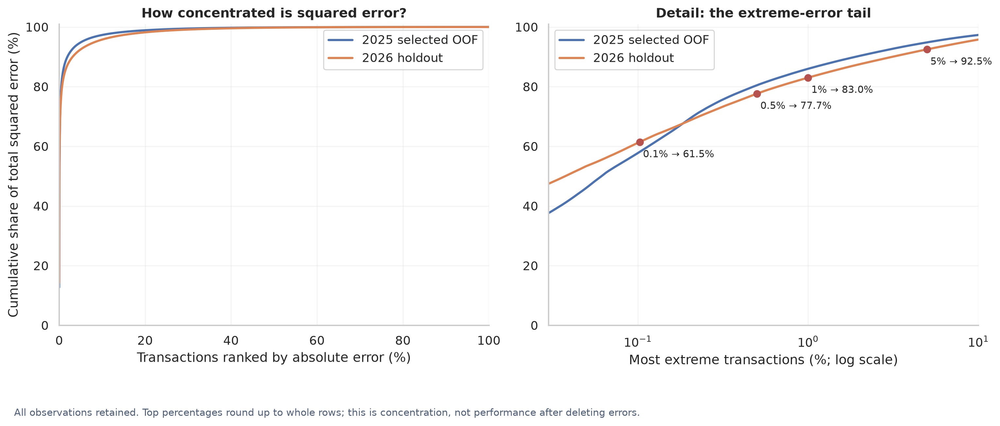

Regression · Error analysis
Dubai apartment valuation
How well does a price model hold up on later property sales?
I built a CatBoost estimator from 124,015 development transactions, then investigated later-period errors and compared it with historical comparable sales.
The fall from development to later-period performance is central to this study. A model score alone misses the concentration of errors, weaker luxury-property performance and the value of a comparable-sales baseline.

The process
How I approached it
-
Define the valuation scope
Restricted the study to ready residential units and developed the model on 2023–2025 registrations, with checks for invalid prices, areas and duplicate transaction IDs.
-
Compare models over time
Compared seven regression algorithms and a median benchmark across four expanding chronological folds. Feature ablation and a bounded parameter study selected a 20-feature CatBoost model.
-
Investigate deployment-relevant failure
Evaluated 26,291 later transactions, examined errors by price and property characteristics, studied uncertainty coverage, and built a benchmark using strictly earlier comparable sales.
The evidence
What the results show
Later-period R² fell to 0.645
Development CV R² was 0.819. On January–September 2026 transactions, MAE was approximately AED 477,002. The later-period result did not meet the 0.70 R² target.
Large errors deserve separate attention
287 sales above AED 10 million accounted for about 79% of holdout squared error. Errors also deteriorated among ordinary properties, so luxury cases do not explain the entire decline.
A benchmark can outperform a complex model
On the same supported 2026 subset, comparable sales achieved R² 0.785 versus 0.667 for CatBoost. This matched-subset comparison does not replace the full-cohort model result.
Reading the results responsibly
Where the evidence stops
The tool supports preliminary analysis, not a certified appraisal. Missing property identity, unfamiliar categories, skewed prices and temporal changes limit generalization. Historical prediction-interval coverage deteriorated in 2026; no guaranteed coverage is claimed.
What I would evaluate next
Use a new prospective evaluation cohort, monitor unfamiliar and missing attributes, and require human review for luxury properties and weak comparable coverage.
Explore the work
The repository includes the native CatBoost model, metadata, reports, aggregate evidence and a synthetic property example. Standalone inference is supported. Full notebook replay also needs excluded raw data and processed caches.
Code, results & methodology